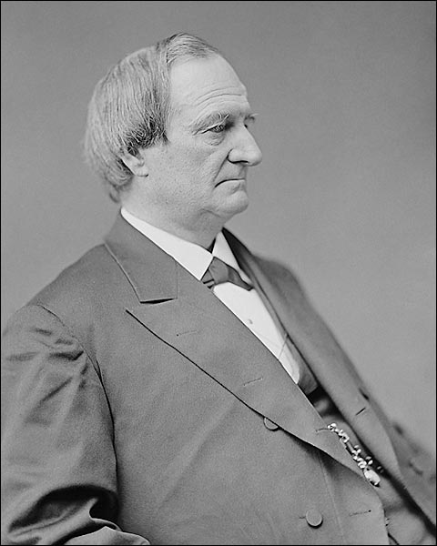
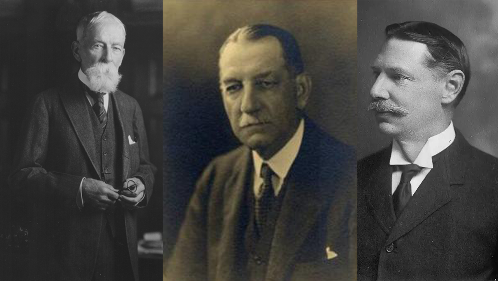

Childhood: Family, Education & Life.
Photo Taken of Louisa/Taft's Mom
Louisa Maria "Louise" Torrey
Alphonso Taft
His father, Alphonso Taft, was a U.S. attorney general and secretary
of war. Taft attended Yale and joined Skull and Bones, of which his
father was a founding member. After becoming a lawyer, Taft was
appointed a judge while still in his twenties.

Photo Taken of Alphonso/Taft's Father

Taft's Brothers (left to right): Charles, Henry, & Horace.
Charles Phelps Taft
Henry Waters Taft
Horace Dutton Taft
Education and Childhood
Taft attended Yale University, from which he graduated second in his
class in 1878. Becoming a lawyer was a natural step for Taft, and he
studied at the Cincinnati Law School where he graduated with the class
of 1880. Admitted to the bar in Ohio, he combined politics with his
practice.
Yes, William Howard Taft had several notable early career experiences
before entering politics, including: Assistant prosecutor: In 1881,
Taft became an assistant prosecutor in Hamilton County, Ohio, due to
his father's political connections Judge of the Cincinnati Superior
Court: In 1887, Taft was appointed judge of the Cincinnati Superior
Court U.S. solicitor general: In 1890, Taft was appointed U.S.
solicitor general, the third highest position in the Department of
Justice Judge of the Sixth U.S. Circuit Court of Appeals: In 1892,
Taft was appointed judge of the Sixth U.S. Circuit Court of Appeals
Civilian governor of the Philippines: In 1901, President William
McKinley appointed Taft civilian governor of the Philippines Secretary
of War: In 1904, President Theodore Roosevelt appointed Taft Secretary
of War
Taft obtains an injunction to prevent western railroads from raising
freight rates. Taft was a fervent anti-trust supporter whose
unrelenting anti-trust crusade outmatched even that of Teddy
Roosevelt.